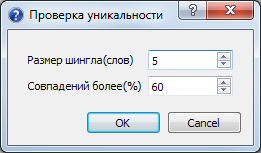

Обработка¶
Примечание
Если статьи не выбраны то обрабатываются все статьи. Выбрать все статьи можно сочетанием клавиш Ctrl+A
Переименование файлов изображений¶
Плагин переименовывает файлы изображений в указанном каталоге. см. урок работы с плагином
Случайная дата¶
Устанавливает для статьи случайную дату из указанного диапазона.

Если отключено Пермешивать то статьи публикуются в порядке указанном в программе
Генерация заголовков статей¶
Генерация заголовков из фрагмента текста до разделителя. При необходимости проводиться небольшая уникализации удалением прилагательных.
Используются словари словоформ на трех языках(ru/en/de).
Обработка заголовков статей¶
Очистка заголовков статей от HTML тегов, изменение длины, исправление регистра букв(Капитализация).

Очистка страниц¶
Обработка страниц, удаление лишних пробелов, запрещенных HTML тегов.

Примечание
Очистка заголовков удаляет все теги
Вставка изображений¶
Вставка ссылок на изображения из указанного каталога.

Вставка ссылок на изображения происходит циклически. В качестве атрибутов ALT и TITLE тега IMG указывается заголовок статьи. Возможно добавление своего атрибута CLASS для управления стилями.
Примечание
В названиях изображений допустимы только цифры и латинские буквы.
Замена синонимов¶
Обработка текста с использованием словарей YASyn.
Есть встроенный словарь на 80000 словоформ. Возможно использование стоп-слов.
Автометки¶
Автоматическая генерация меток для статей на основе стеммера.

Работа с тремя языками, русским, английским и немецким. Импорт списка меток в формате Wordpress Translator.
Для работы необходимо выполнить следующие шаги:
- Генерация лемм с указанной длиной и частотой вхождений
- Удаление лишних, дописывание окончаний слов
- Запуск обработки статей
Вступительный текст¶
Генерация вступительного текста к статье из текста.

Возможно указание длины вступительного текста и необходимость очистки тегов.
Вставка ссылок¶
Вставка ссылок с статью

Возможно чтение ссылок из текстового файла(TXT) и карты сайта(XML, XML.GZ). Так-же можно указать либо количество ссылок на статью, либо равномерное распределение всех ссылок по статьям.
Циклическая вставка строк в статьи¶
Плагин вставки строк в статьи.

Вставка возможна в начале статьи, в конце или с использованием регулярного выражения.
PHP плагин “Зачистка контента”¶
<?php
require_once 'strip_tags_smart.php';
require_once 'html_paragraph.php';
print("Обрабатываем <b>$title</b>");
$text = html_paragraph(strip_tags_smart ($text));
?>
PHP плагин “Удаление вложенных и непарных тэго┶
<?php
require_once 'html_tags_normalize.php';
print("Обрабатываем <b>$title</b>");
$text = html_tags_normalize ($text,$NoDeleteError,$DeleteError);
$NoDelet=count($NoDeleteError);
$Delet=count($DeleteError);
print( "Исправлено:$Delet, неисправлено:$NoDelet ошиб." );
if ($NoDelet != 0)
{
for ($i=0; $i<$NoDelet; $i++)
{
$myNoDeleteError =$NoDeleteError[$i];
print ("<b>Ошибка $1</b> - $myNoDeleteError");
}
}
?>
Проверка уникальности статей¶
Диалог проверки статей на уникальность.
Настройка параметров проверки
Окно соответствий

Проверка содержимого


PHP плагин “Расстановка русских кавычеꔶ
<?php
require_once 'kawychka_function.php';
print("Start <b>$title</b>");
$text = kavych($text);
$title = kavych($title);
$intro = kavych($intro);
print("done");
?>
- Обработка
- Различная обработка указанных статей